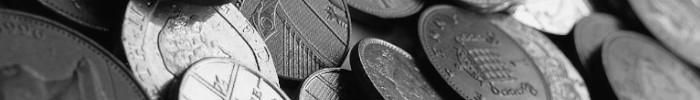

O Numizmatyce
Numizmatyka to nauka zajmująca się badaniem monet, banknotów i innych środków płatniczych. Jest to dziedzina, która łączy w sobie elementy historii, archeologii, ekonomii i sztuki.
Monety i banknoty są nie tylko środkami płatniczymi, ale także ważnymi artefaktami historycznymi. Przez wieki były one świadkami wielu wydarzeń historycznych i zmian społecznych. Kolekcjonowanie monet, znane jako numizmatyka, jest pasją wielu ludzi na całym świecie.
Na naszej stronie znajdziesz informacje o historii monet, ciekawostki związane z numizmatyką oraz galerię zdjęć unikalnych i rzadkich monet. Zapraszamy do odkrywania fascynującego świata numizmatyki!

Historia Monet
Monety mają długą i fascynującą historię, sięgającą starożytności. Pierwsze monety pojawiły się w VII wieku p.n.e. w Lidii, na terenie dzisiejszej Turcji. Były one wykonane z elektrum, naturalnego stopu złota i srebra.
W starożytnym Rzymie monety były ważnym elementem gospodarki i propagandy. Cesarze często umieszczali na nich swoje wizerunki oraz symbole zwycięstw militarnych. Monety rzymskie były szeroko rozpowszechnione w całym imperium i poza jego granicami.
W średniowieczu monety były bite przez różne królestwa i księstwa. Każde z nich miało swoje własne wzory i nominały. W tym okresie pojawiły się również pierwsze banknoty, które były początkowo używane jako weksle handlowe.
Współczesne monety są produkowane przez mennice państwowe i mają różne nominały oraz wzory. Są one wykonane z różnych metali, takich jak miedź, nikiel, aluminium i stal. Monety kolekcjonerskie są często bite z metali szlachetnych, takich jak złoto i srebro.
Numizmatyka jako Hobby
Kolekcjonowanie monet jest popularnym hobby na całym świecie. Numizmatyka łączy w sobie elementy historii, sztuki i ekonomii. Kolekcjonerzy zbierają monety ze względu na ich wartość historyczną, artystyczną lub kolekcjonerską.
Wiele osób zaczyna swoją przygodę z numizmatyką od zbierania monet obiegowych z różnych krajów. Z czasem mogą zainteresować się monetami kolekcjonerskimi, które są bite w ograniczonych nakładach i mają wysoką wartość kolekcjonerską.
Numizmatyka to pasjonujące hobby, które pozwala odkrywać fascynujący świat monet i banknotów. Kolekcjonerzy mogą zdobywać unikalne i rzadkie monety, uczestniczyć w aukcjach numizmatycznych oraz wymieniać się swoimi znaleziskami z innymi pasjonatami.
Galeria Monet
W naszej galerii znajdziesz zdjęcia unikalnych i rzadkich monet z różnych epok historycznych. Zobaczysz monety starożytne, średniowieczne, nowożytne oraz współczesne. Każda moneta ma swoją historię i wartość kolekcjonerską.
Zapraszamy do zapoznania się z naszą galerią i odkrywania fascynującego świata numizmatyki. Może znajdziesz w niej inspirację do rozpoczęcia swojej przygody z kolekcjonowaniem monet!